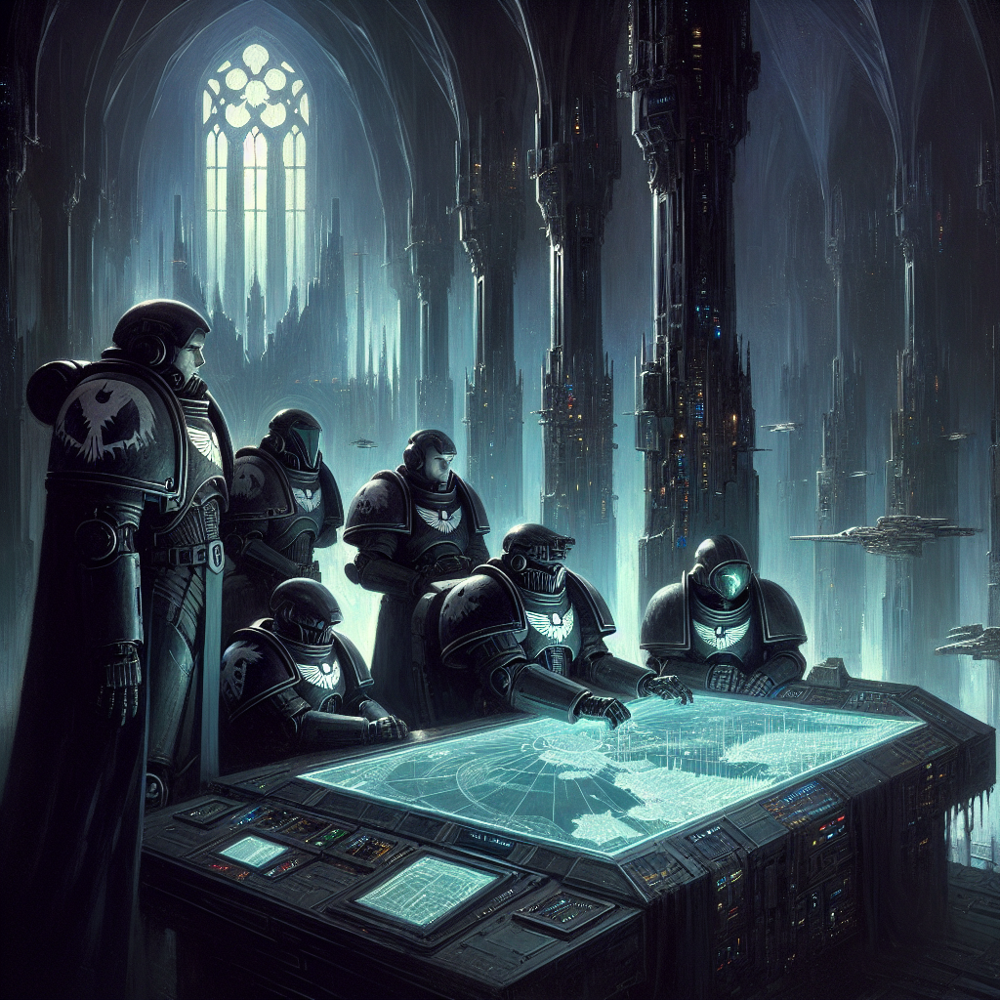

![]()
flowchart TD
C["Content image"]
S["Style image"]
G["Generated image"]
G --> L["Loss network"]
L --> G
C -- "Content loss" --> L
S -- "Style loss" --> L
LAIR - Language As Intermediate Representation
LLMs
AI
style transfer
Language As Intermediate Representation - a new paradigm for transformation using multimodal LLMs
The awesome thing about language is that, well, we all mostly speak it, to some extent or another. This gives us an immensely powerful tool to manipulate transformational tasks. For the purposes of this post, I consider a transformational task to be essentially anything that takes an input and is largel intended to return some version of the same thing. This is not a very precise definition, but it will have to do for now.
Such models are nothing new. Perhaps the most eye-catching and ubiquitous of such models are neural style transfer models that take an image and return a version of the same image in a different style that let you turn a picture of your dog into a Van Gogh painting (Gatys, Ecker, and Bethge 2015). Quite simply put, these models are your typical generative model, with the difference that it takes two separate loss definitions: content loss, which is loss of the generated image vis-a-vis the content reference, and style loss, which is the loss vis-a-vis the style reference image. A “good” image then is one that minimises total loss, i.e. it’s just as close to your dog as it is to Van Gogh. Figure 1 outlines this logic.
Gatys, Leon A, Alexander S Ecker, and Matthias Bethge. 2015. ‘A Neural Algorithm of Artistic Style’. arXiv Preprint arXiv:1508.06576.
Given a content source image \(\vec{c}\) and a style reference image \(\vec{s}\), we define the total loss of our generated image \(\vec{g}\) as
\[ \mathcal{L}_{total} = \alpha \mathcal{L}_{content} + \beta \mathcal{L}_{style} \]
where \(\alpha\) and \(\beta\) are hyperparameters that control the relative importance of the content and style losses. The content loss for layer \(l\) is defined as
\[ \mathcal{L}_{content}(\vec{c}, \vec{g}, l) = \frac{1}{2} \sum_{i,j} (\vec{c}_{ij}^l - \vec{g}_{ij}^l)^2 \]
which is basically a simple squared error loss between the feature vector of the content image and the generated image at layer \(l\). The style loss is a bit more complicated, and is these days typically defined as the Maximum Mean Discrepancy, which Li et al. (2017) have shown is essentially equivalent to the Gram matrix loss, defined as
Li, Yanghao, Naiyan Wang, Jiaying Liu, and Xiaodi Hou. 2017. ‘Demystifying Neural Style Transfer’. https://arxiv.org/abs/1701.01036.
\[ \mathcal{L}_{style}(\vec{s}, \vec{g}, l) = \frac{1}{4N_l^2M_l^2} \sum_{i,j} (\mathbf{G}_{ij}^l - \mathbf{S}_{ij}^l)^2 \]
where \(\mathbf{G}_{ij}^l\) and \(\mathbf{S}_{ij}^l\) are the Gram matrices of the generated reference image and the style image at layer \(l\), respectively. \(N^l\) is the number of feature maps in layer \(l\) and \(M_l\) is the dimensionality (height times width) of the feature map of layer \(l\). There are two fundamental problems with this.
- This works much less well for things that aren’t images or at least sufficiently similar to images.
- The bigger problem is that the style reference is pretty much exhaustive. By that, I mean that there isn’t much we can convey to the model about the style that isn’t encapsulated in the style reference images. Depending on how semantically apt your model is, it may or may not be able to pick up some higher level ideas. It may be able to pick up the brush strokes of Van Gogh or the colours of a Turner, but it may not be able to paint your characters in the semantic context of Van Gogh’s time and place.
This is where language comes in. Language is a very powerful tool for conveying information, and it turns out that if we use language as an intermediate representation, we can use language models to manipulate this intermediate representation to our heart’s content, using a relatively informal and rather forgiving language. This is the idea behind LAIR.
A toy example
I’m a firm believer in silly toy examples. The sillier, the better. So, we’ll start with the following proposition: can we create a model that will look at a photo from, say, the front page of our favourite newspaper, and transpose it into the Warhammer 40k universe? In case you’re unfamiliar, Warhammer 40k is set – as the name suggests – in the 40th millennium, but is a weird mixture of medieval and futuristic technology. The whole atmosphere is taking the ‘Dark Ages’ part of the Middle Ages,1 adding spaceships and laser guns, and turning the whole thing into an absolutely depressing dystopia. It’s a lot of fun.
1 Which may or may not ever have actually existed.
There are a few things we want here: I don’t merely want the visual style of the Warhammer 40k universe, I also want the semantics – that is, I want characters to be transposed into the Warhammer 40k universe. I want the model to understand that the people in the photo are now Space Marines, and that the buildings are now Gothic cathedrals. I can’t get neural transfer to that for me, because it does not understand, or care, about semantics, and does not do semantic transformation. More importantly, I cannot interact with the ‘guts’ of neural style transfer beyond setting the hyperparameters and the source images.
What I can, however, do is to use the language I am mostly most proficient in – that is, human language – to manipulate an intermediate representation.
flowchart LR
subgraph Description
direction TB
S["Source image"] --> D("Descriptor\ne.g. GPT-4 vision") --> d["Description"]
end
subgraph Transformation
direction TB
t("Transformer\ne.g. GPT-4") --> td["Transformed\ndescription"]
end
subgraph Rendering
direction TB
r("Renderer\ne.g. DALL-E") --> I["Output\nimage"]
end
Description --> Transformation --> Rendering
Figure 2 outlines the basic idea for images. We use a descriptor model to describe the image, and then use a text-to-text transformer to transform the description. The transformed description is then rendered into an image. The descriptor model is typically a vision model, and the transformer is typically a language model. The renderer would then be a generative model.
Consider the following source image I downloaded from Pexels:
Here’s the intermediate representation (IR) description created by GPT-4 vision:
This is an image of four individuals gathered around a laptop, suggesting a collaborative work environment. The setting has an ample amount of natural light, evident by the bright illumination on the subjects and the interior. They appear to be located in a modern indoor environment with a large curved window in the background, contributing to the light-flooded ambiance.
Starting from the left, the first individual is a man with short, dark hair and a light beard, wearing a black t-shirt with a white graphic and text. He appears focused, resting his hands on the laptop while looking at the screen. To his right is a woman with shoulder-length curly hair who seems engaged and smiling, leaning slightly towards the laptop. She’s wearing a light grey short-sleeved top.
Behind these two and slightly out of focus, two more individuals are present. The person in the middle of the composition is a man with shoulder-length wavy hair, wearing a black shirt, gazing at the laptop screen. To the far right, partially cropped out of the frame, there is a woman with glasses, wearing a dark business casual blazer. She seems to be observing the laptop’s screen with interest, standing slightly behind the seated individuals.
The group exhibits a sense of teamwork and focus, with everyone’s attention directed toward the laptop, situated on what appears to be a white table or desk. The body language and expressions suggest a positive, collaborative atmosphere, typical of a professional or academic team setting.
This is a pretty decent description. Let’s grimdark it up by passing it to our transformer model, which was initialised with the following prompt:
Your job is to analyze descriptions of images and change them to transpose the image into the dark, futuristic aesthetic of the Warhammer 40k universe. You are given a description of a scene, and your job is to change that scene according to the instructions, and give a detailed description of the changed scene that would allow a generative model to create an image.
- Replace clothing items with a mixture of futuristic and mediaeval looking armour.
- Replace every-day objects held by characters with power swords, chainswords,futuristic looking guns, staffs or magic items.
- Replace architecture with the monumental, dark architecture common to the Warhammer 40k universe.
- Include things like monumental gothic spaceships in the image description.
Here’s the output:
This is an image of four battle-hardened individuals gathered around a hololith, suggesting a strategic war council. The setting is bathed in the cold, harsh light of flickering lumens, casting long, grim shadows on the figures and the interior. They appear to be situated in a cathedral-like command room of an Imperial Battleship, with a monumental, gothic archway in the background, contributing to the oppressive ambiance.
Starting from the left, the first individual is an Adeptus Astartes, his short, dark hair and light beard visible beneath the rim of his power armor helmet. He is clad in a black power armor with white Imperial insignia. He appears focused, his gauntleted hands resting on the hololith while studying the battlefield projection. To his right, a Sororitas, her shoulder-length, curly hair peeking out from beneath her wimple, leans towards the holographic display. She’s clad in a light grey power armor, her face engaging and determined.
Behind these two and slightly out of focus, two more figures loom. The figure in the middle of the composition is a man, his shoulder-length wavy hair barely visible beneath his Inquisitorial hat, wearing a black, ornate, medieval-looking armor, his eyes fixed on the hololith. To the far right, partially cropped out of the frame, there is a Tech-Priestess, her bionic glasses glinting in the lumen-light, her dark, mechanicus robes adding to her awe-inspiring presence. She seems to be observing the hololith with keen interest, standing slightly behind the armored individuals.
The group gives off a sense of unity and focus, with everyone’s attention directed toward the hololith, situated on what appears to be an aged, white marble table. The body language and expressions suggest a tense, collaborative atmosphere, typical of a war council in the grim darkness of the far future.
By the Emperor, that’s some good stuff. Let’s see what DALL-E makes of it:

It’s interesting to note what remains and what has changed. In particular, the relationship of the figures to each other, both spatially and semantically, as well as their posture, their number (mostly!) and the general subject matter at a highly semanticised level was preserved. Instead of a laptop, they’re looking at a big holographic sand table. Note that unlike in NST, we actually have control over what is preserved and what is not – that’s what our transformer prompt accomplishes. We’ve told it to change dress, for instance, but we haven’t told it to make any changes to the overall relationship between the figures (note how a “collaborative atmosphere”, for instance, was retained word for word).
What’s the point?
Okay, this was quite fun, but what’s the point? Well, the point is that we can use language as an intermediate representation to manipulate things relatively easily. This is powerful because language is such an accessible and forgiving intermediate representation. More importantly, however, anything that can be represented in language can be manipulated this way.
- In the space of language-to-language, this includes adapting text to the needs of special audiences,(Steinmetz 2023; Verma, Boland, and Miesenberger 2023) conveying information to lay audiences (Lee, Goldberg, and Kohane 2023) and creating secondary explanatory materials e.g. statutory explanations (Blair-Stanek, Holzenberger, and Van Durme 2023).
- For image-to-image transformations, retaining semanticity while simpifying visuals and removing clutter may often be useful, e.g. for creating procedural visual guidance for medical procedures (Chen 2023). Often, such images are created by hand, but this is a time-consuming process that could be automated.
- For code-to-code, language as an intermediate representation allows the interjection of desired features into code, e.g. for the purposes of code refactoring. Beyond simple code rewriting, this allows a kind of opinionated transformation. Often, a target language is not only idiomatically different but also has certain other characteristics, and this is a fortiori the case for DSLs (Magalhães et al. 2023).
- For code-to-text, this allows the creation of documentation from code, which is a perennial problem in software engineering. The textual intermediate representation allows fine control over the resulting documentation.
Steinmetz, Ina. 2023. ‘Developing “EasyTalk”–a Writing System Utilizing Natural Language Processing for Interactive Generation of “Leichte Sprache”(easy-to-Read German) to Assist Low-Literate Users with Intellectual or Developmental Disabilities and/or Complex Communication Needs in Writing’. https://kola.opus.hbz-nrw.de/frontdoor/deliver/index/docId/2443/file/diss.pdf.
Verma, A Kumar, S Gavra Boland, and Klaus Miesenberger. 2023. ‘Bridging the Digital Divide for Persons with Intellectual Disabilities: Assessing the Role of ChatGPT in Enabling Access, Evaluation, Integration, Management, and Creation of Digital Content’. In ICERI2023 Proceedings, 3767–76. IATED.
Lee, Peter, Carey Goldberg, and Isaac Kohane. 2023. The AI Revolution in Medicine: GPT-4 and Beyond. Pearson.
Blair-Stanek, Andrew, Nils Holzenberger, and Benjamin Van Durme. 2023. ‘Can GPT-3 Perform Statutory Reasoning?’ arXiv Preprint arXiv:2302.06100.
Chen, Hao-Wen. 2023. ‘Endoscopic Endonasal Skull Base Surgery for Pituitary Lesions: An AI-Assisted Creative Workflow to Develop an Animated Educational Resource for Patients and Physicians’. PhD thesis, Johns Hopkins University.
Magalhães, José Wesley de Souza, Jackson Woodruff, Elizabeth Polgreen, and Michael FP O’Boyle. 2023. ‘C2TACO: Lifting Tensor Code to TACO’. In Proceedings of the 22nd ACM SIGPLAN International Conference on Generative Programming: Concepts and Experiences, 42–56.
The possibilities for using language as an intermediate representation are endless. LAIR is a powerful paradigm for transformational tasks that allows us to use language as an intermediate representation to manipulate things in a way that is both accessible and powerful, and that allows us to pick and choose what part of semanticity we want to manipulate versus what we want to preserve. It’s hard to reason about LAIR’s relative performance given that it is not a technique but a paradigm, and that its focus is not simple style transfer but finely controlled stylistic and contextual transformation, but even in the current absence of benchmarks, it is clear that models benefit from using language as an easily workable and malleable intermediate representation.
Code
The code for the toy example is available here.
Citation
BibTeX citation:
@misc{csefalvay2024,
author = {{Chris von Csefalvay}},
title = {LAIR - {Language} {As} {Intermediate} {Representation}},
date = {2024-01-06},
url = {https://chrisvoncsefalvay.com/posts/lair/},
doi = {10.59350/qg7b3-crs97},
langid = {en-GB}
}
For attribution, please cite this work as:
Chris von Csefalvay. 2024. “LAIR - Language As Intermediate
Representation.” https://doi.org/10.59350/qg7b3-crs97.